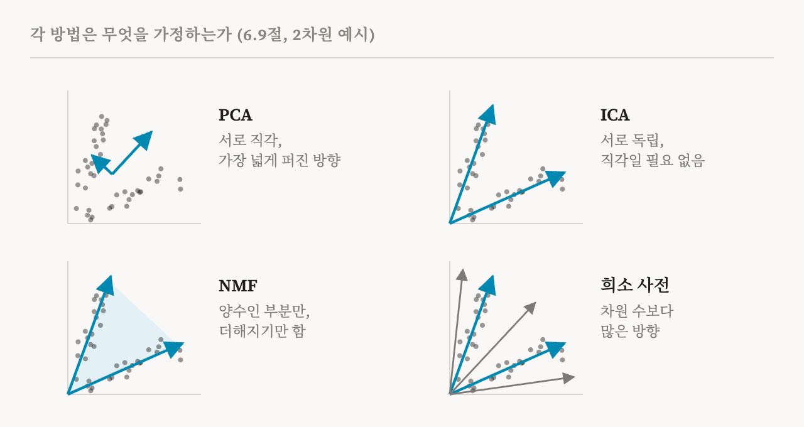
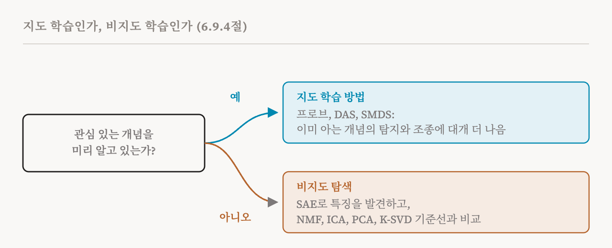

10편부터 13편까지는 희소 사전, 곧 희소 오토인코더와 그 친척들에 관한 내용이었습니다. 특징을 찾는 이 분야의 주된 도구이지만 유일한 도구는 아닙니다. 이번 편은 이 책의 6.9절(48–50쪽)을 다룹니다. 이 절은 희소 사전을 통계학과 신호 처리에서 빌려 온 방법들, 그리고 이미 알고 있는 개념에서 출발하는 지도 학습 방법들과 비교합니다. 각 방법은 활성값 속의 숨은 구조가 어떤 모양인지 서로 다르게 가정하고, 그래서 해석 가능성, 규모, 견고성을 서로 다르게 맞바꿉니다.
이 절 전체에 도움이 되는 생각이 하나 있습니다. 이 방법들은 모두 입력마다 한 열씩 활성값을 적은 큰 표를 받아, 그것을 더 단순한 두 표의 곱으로 쓰려고 합니다. 한 표는 방향들의 집합입니다. 다른 표는 각 입력이 각 방향을 얼마나 쓰는지입니다. 방법들의 차이는 이 두 표에 무엇을 요구하느냐에 있습니다.

음수 미포함 행렬 분해(NMF)
1999년에 나온 NMF(non-negative matrix factorisation)는 두 표 모두에 음수가 없을 것을 요구합니다. 그러면 모든 특징은 표현에 더해지기만 하고, 다른 특징의 일부를 상쇄하지 못합니다. 그래서 부분들을 읽기 쉽습니다. 원래 논문에서 얼굴 사진에 NMF를 적용하자, 눈, 코, 입 같은 부분들이 나왔고, 이 부분들은 단순히 더해져 얼굴을 이룹니다. NMF에는 모든 값을 음수가 아니게 유지하는 단순한 학습 절차도 있습니다. 또 분리 가능성(separability), 곧 각 특징이 충분히 순수한 예시 하나 이상에서 홀로 나타난다는 가정 아래에서는, 찾아낸 분해가 유일하다는 것이 보장됩니다.
12편의 식별 가능성 걱정을 생각하면 이 유일성은 매력적입니다. 하지만 고전적인 NMF는 신경망의 활성값에 잘 맞지 않습니다. 활성값은 음수일 수 있어서 전처리가 필요한데, 이것이 구조를 왜곡할 수 있습니다. NMF는 희소성을 명시적으로 장려하지 않습니다. 그리고 큰 사전으로 키우는 데 비용이 많이 듭니다. 그래서 신경망 연구는 주로 준-NMF(semi-NMF)를 썼습니다. 방향에는 음수를 허용하고 양에는 계속 음수를 허용하지 않는 방법입니다. 2026년의 한 연구는 작은 규모의 평가에서 준-NMF가 SAE에 견줄 만한 특징을 찾아낸다는 것을 발견했지만, 큰 규모의 체계적인 비교는 아직 없습니다. 그보다 앞선 연구는 비슷한 방법으로 BERT의 은닉 상태를 분해했습니다.
주성분 분석(PCA)
1901년까지 거슬러 올라가는 PCA(principal component analysis)는, 데이터의 변동을 얼마나 많이 설명하는지에 따라 순서를 매긴 서로 직각인 방향들을 찾습니다. 첫 번째 방향은 활성값이 가장 넓게 퍼진 방향이고, 두 번째는 첫 번째에 직각인 방향 가운데 가장 넓게 퍼진 방향이며, 이렇게 이어집니다. PCA는 빠르고, 안정적이고, 규모를 키우기 쉽습니다. 1편에서 본 것처럼 제프리 엘먼은 이미 1991년에 순환 신경망에 PCA를 썼습니다.
하지만 PCA에 내장된 가정은 신경망의 활성값과 잘 맞지 않습니다. 해석 가능성 연구가 관심을 두는 정보의 상당 부분은 특정한 영역이나 맥락에서만 나타나서, 가장 큰 분산을 찾는 것만으로는 찾을 수 없습니다. 그리고 PCA는 방향들이 서로 직각이도록 강제하지만, 실제 특징들은 서로 상관되거나 부분적으로 겹치는 경우가 많습니다. 8편의 중첩은 결국 특징들이 직각이 아니라는 주장입니다. 이 책이 인용하는 2025년의 한 벤치마크에서 PCA는 모델 조종과 개념 탐지 모두에서 SAE를 포함한 다른 방법 대부분보다 성적이 나빴습니다. 어떤 계산이 어디서 일어나는지 찾는 데서는 PCA가 SAE를 이기기도 하지만, 단순한 지도 학습 방법에는 여전히 대체로 뒤처집니다.
독립 성분 분석(ICA)
ICA(independent component analysis)는 그 양이 서로 통계적으로 독립적으로 변하는 방향들을 찾습니다. 이 책 바깥에서 흔히 드는 예는 칵테일파티입니다. 마이크 여러 대가 각각 여러 사람의 목소리가 섞인 소리를 녹음해도, ICA는 각 목소리를 따로 뽑아낼 수 있습니다. 각 화자가 다른 사람과 상관없이 말하기 때문입니다. 모델의 활성값이 정말로 독립적인 바탕 특징들이 섞인 것이라면, ICA는 그 특징들을 되찾을 수 있다는 것이 증명되어 있습니다.
이 책은 그 가정이 깨질 수 있는 이유를 두 가지 듭니다. 고전적인 ICA는 숨은 원천의 수가 관찰된 차원의 수와 같다고 기대하지만, 중첩은 특징이 차원보다 훨씬 많다고 말합니다. 이를 다루려면 확장이 필요합니다. 그리고 모델 안의 특징들은 전혀 독립적이지 않을 수 있습니다. 초기의 비교에서 ICA는 해석 가능성 면에서 SAE보다 나은 점을 보이지 못했습니다. 하지만 2026년의 한 연구는 ICA가 SAE에 견줄 만한 성능을 낼 수 있다는 것을 발견했고, 예전의 저조한 결과는 신경망 활성값의 규모와 통계적 구조에 맞지 않는 고전적인 구현 탓이라고 주장했습니다. 이 책은 ICA를 단순한 고전적 기준선으로 볼지, 아직 활용되지 않은 큰 잠재력을 가진 접근으로 볼지 열어 둡니다.
지도 학습 방법
지금까지의 방법은 모두 비지도 방법입니다. 무엇을 찾으라는 말 없이 구조를 찾습니다. 관심 있는 개념을 미리 알고 있다면, 지도 학습 방법은 그 개념을 곧장 겨냥할 수 있습니다. 이 책은 세 가지를 듭니다. 분산 정렬 탐색(distributed alignment search, DAS)은 이름표가 붙은 예시를 이용해, 모델의 표현을 '첫 번째 수가 더 크다' 같은 상위 수준의 인과 변수와 나란하게 만드는 좌표 변환을 학습합니다. 지도 다차원 척도법(supervised multi-dimensional scaling, SMDS)은 개념들 사이의 유사성을 보존하도록 활성값을 사영합니다. 그리고 3편에서 소개한 프로브는, 개념이 있는 예시와 없는 예시의 활성값을 대비해서 개념의 방향을 맞춥니다.
놀라운 것은 이 가운데 가장 단순한 방법이 얼마나 잘하느냐입니다. 앞에서 말한 2025년 벤치마크에서, 단순함에도 불구하고 프로빙은 개념 탐지에서 SAE를 앞섰습니다. 프로빙은 5편의 거절 방향이나 2편의 숨은 백도어처럼 모델 안의 안전 관련 개념을 찾는 표준 도구가 되기도 했습니다. 더 일반적으로, 이름표가 붙은 데이터가 있으면 지도 학습 방법은 개념 탐지와 조종 모두에서 SAE를 앞서는 경우가 많습니다. 또 개념의 집합이 복잡도를 정하므로 사전의 크기나 희소성 벌점을 고를 필요도 없습니다.
한계는 그 반대편에 있습니다. 개념마다 이름표가 붙은 데이터가 필요하고, 아무도 생각하지 못한 특징은 찾아낼 수 없습니다. 그래서 이 책은 일을 나눕니다. 미리 정해진 뚜렷한 개념이 중요한 상황에는 지도 학습 방법을, 탐색에는 SAE를 씁니다.

이 책은 프로빙을 여기가 아니라, 23편이 다룰 중간 표현에 관한 장에서 자세히 다룹니다. 프로빙의 핵심 기여가 단의적 특징이나 인과 변수를 뽑아내는 것이 아니라, 활성값에서 사람이 이해할 수 있는 정보를 읽어 내는 데 있다고 보기 때문입니다.
잣대로서의 고전적 딕셔너리 학습
마지막으로, K-SVD 같은 오래된 딕셔너리 학습 알고리즘은 여전히 쓸모 있는 기준선입니다. K-SVD는 두 단계를 번갈아 합니다. 사전을 고정하고 희소 코드를 찾고, 코드를 고정하고 사전을 개선합니다. 이 과정은 일정한 조건에서 수렴합니다. 비교 연구들은 SAE의 주된 장점이 속도라고 봅니다. SAE의 인코더는 활성값마다 문제를 푸는 대신 어떤 활성값이든 분해하는 법을 한 번에 배우지만, 그 대가로 희소성을 일부 포기할 수 있습니다. 고전적인 딕셔너리 학습이 어떤 경우에는 여전히 더 좋은 사전을 만들 수 있으므로, SAE가 무엇을 보태는지 판단하는 중요한 기준점으로 남아 있습니다.
방법들을 나란히
| 방법 | 가정 | 강점 | 신경망 활성값에서의 약점 |
|---|---|---|---|
| 희소 오토인코더 | 활성값은 과완비 사전 위의 희소한 합 | 규모를 키우기 쉽고 탐색에 맞게 설계됨 | 식별 가능성, 불안정성, 축소 효과(11–12편) |
| NMF와 준-NMF | 부분들은 더해지기만 하고 상쇄되지 않음 | 읽기 쉬운 부분. 분리 가능성 아래에서 유일 | 활성값이 음수일 수 있음. 명시적 희소성 없음. 큰 규모에서 비쌈 |
| PCA | 중요한 방향은 분산이 가장 크고 서로 직각 | 빠르고 안정적이며 규모를 키우기 쉬움 | 분산이 곧 관심사는 아님. 특징은 직각이 아님 |
| ICA | 숨은 원천들은 서로 독립적으로 변함 | 가정이 맞으면 되찾을 수 있음이 증명됨 | 원천이 차원보다 많지 않다고 기대함. 특징이 독립이 아닐 수 있음 |
| 지도 학습(프로브, DAS, SMDS) | 개념을 알고 있고 이름표가 있음 | 이미 아는 개념의 탐지와 조종에서 대개 가장 좋음 | 이름표가 필요함. 새로운 특징은 찾지 못함 |
| 고전적 딕셔너리 학습(K-SVD) | SAE와 같은 가정을 직접 풂 | 더 좋은 사전을 찾을 수 있음 | 활성값마다 문제를 풀어서 느림 |
| 용어 | 뜻 |
|---|---|
| 행렬 분해 | 데이터 표를 더 단순한 두 표의 곱으로 쓰는 것 |
| NMF | 모든 값이 음수가 아니어서 부분들이 더해지기만 하는 분해 |
| 분리 가능성 | 각 특징이 순수한 예시 하나 이상에서 홀로 나타나는 것 |
| 준-NMF | 방향에는 음수를 허용하고 양에는 허용하지 않는 NMF |
| PCA | 설명하는 변동의 크기 순서로 서로 직각인 방향들을 찾는 방법 |
| 설명된 분산 | 어떤 방향이 데이터의 퍼짐 가운데 얼마를 차지하는지 |
| ICA | 그 양이 서로 독립적으로 변하는 방향들을 찾는 방법 |
| 지도 학습 방법 | 이미 아는 개념의 이름표 붙은 예시로 학습하는 방법 |
| DAS | 분산 정렬 탐색. 상위 수준의 인과 변수와 맞는 좌표를 학습함 |
| K-SVD | 코드 찾기와 사전 개선을 번갈아 하는 고전적 알고리즘 |
| 기준선 | 새 방법을 재는 잣대로 쓰는 더 단순한 방법 |
15편에서는 문제를 뒤집어 봅니다. 완성된 모델을 분해하는 대신, 처음부터 읽기 쉬운 모델을 만들 수 있을까요?